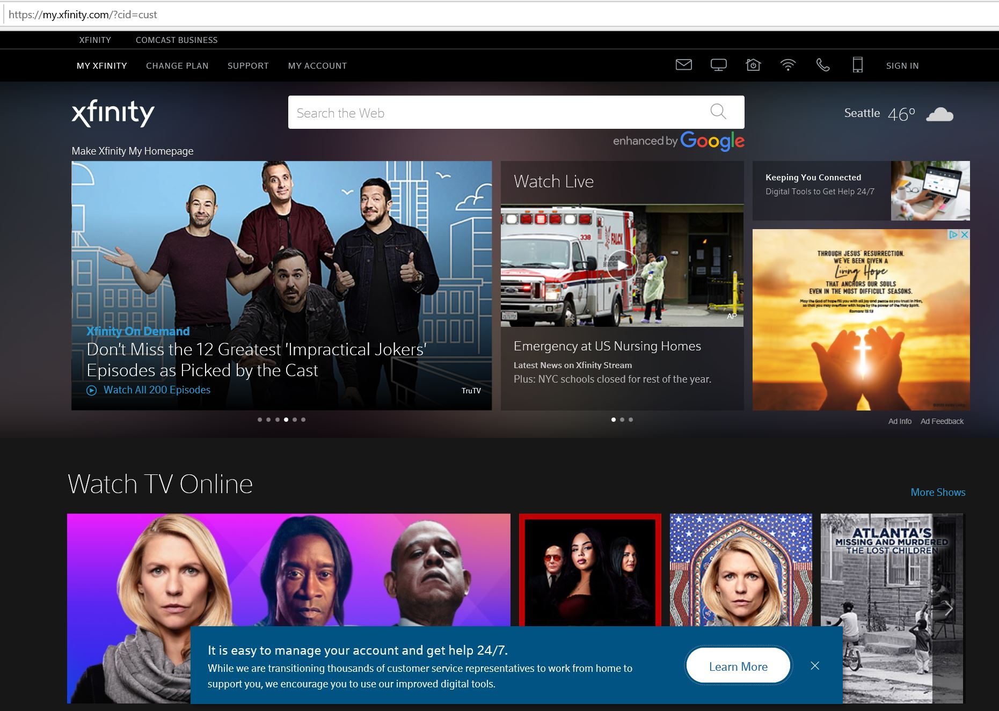
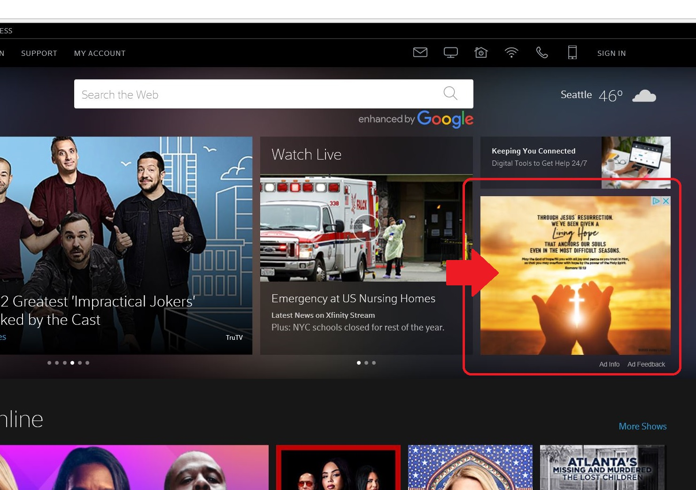
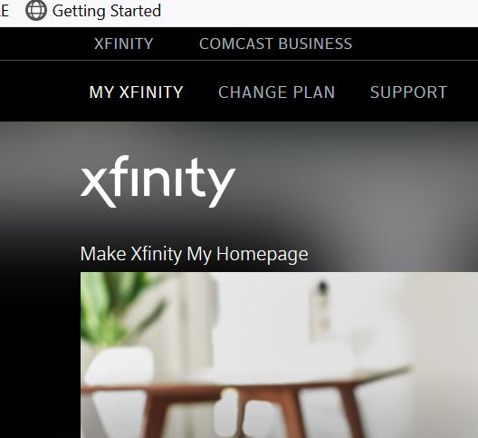
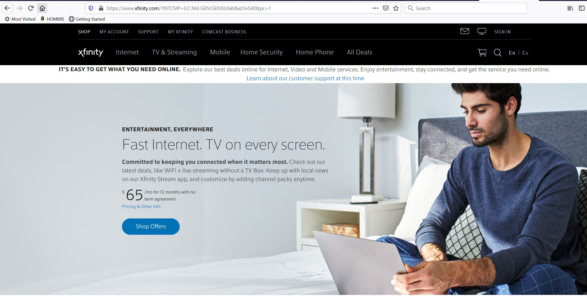
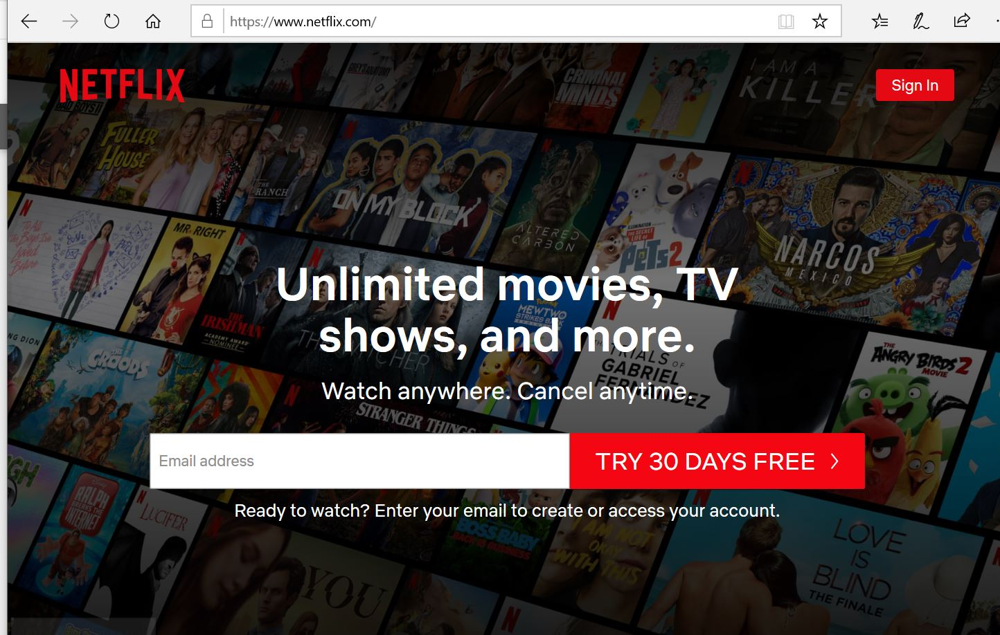
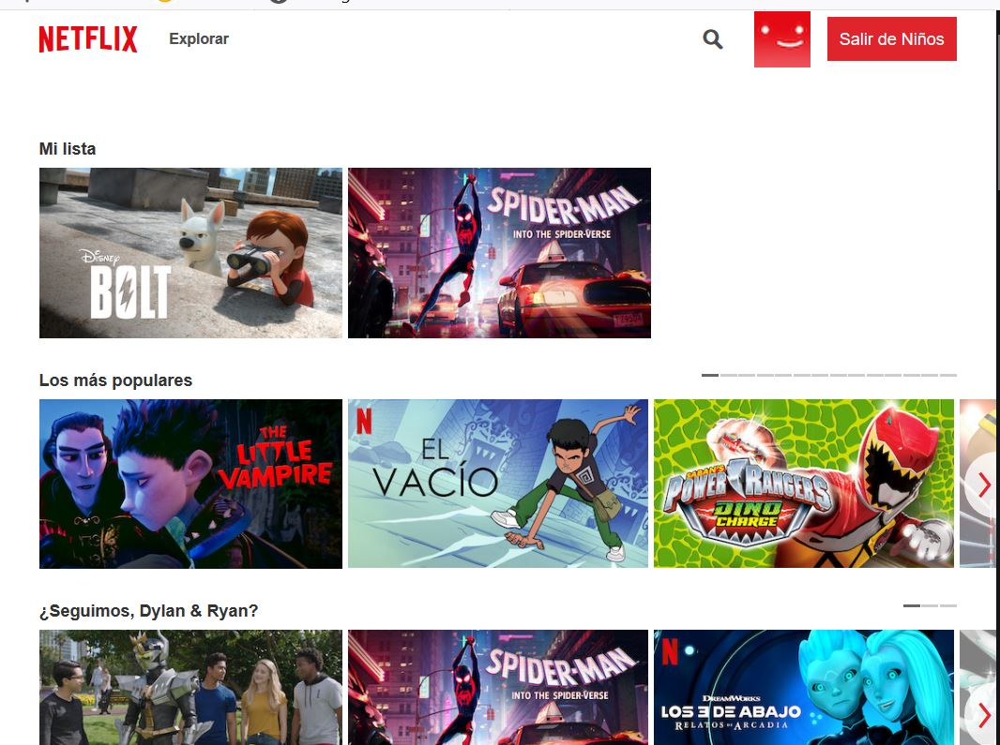

Analysis of the usability of the Xfinitiy website
This analysis is for the Xfinity website. Xfinity is the brand for consumer cable television, internet, telephone, and wireless services provided by the company the Comcast Corporation.
Criterion 1: Does the home page make it clear what the site is?
 The home page for Xfinity is very busy and lacks a clear indication of what Xfinity is.Assessment
No. Navigating to www.xfinity.com, I’m presented with lots information and options in the first part of the home page. I can perform a google search of the Web. I see the weather and my current location. There are some options to watch TV online. It seems that I can also get support for my account. I’m a bit confused. I scroll to the bottom to look for an “about Xfinity” to see what Xfinity is. These isn’t one, but there is an “About Comcast” link.
Recommendations
The homepage needs a clear statement of what Xfinity is and a presentation of the primary services offered. It also needs to provide some context around the relationship between Xfinity and Comcast.
Criterion 2: Are there overwhelming distractions?
 This advertisement that states "Through Jesus' Resurrection we've been given a Living Hope" seems out of place on Xfinity's website.Assessment
Yes. This ties in a bit with the confusion of the purpose of the homepage, there are many flashy things happening in the main part of the homepage. I navigated to the site to purchase services or possibly check the bill on my account, but now I think I may need to find out what’s going on with that ambulance or learn how Jesus is going to help me find hope.
Recommendations
The first change I would make is to take out the unrelated ad from the main section of the homepage.
Criterion 3: Am I presented with clear, easily understandable choices?
 There are 4 links in the top left of Xfinity's homepage with the word Xfinity.Assessment
No, I don’t really know what to do here. For example, at the top left of the page there are 4 links labeled something link “xfinity”, and it is not clear to me the difference among them. In order of top to bottom, I clicked them:.
- Small XFINITY: Takes me to a homepage for purchasing services.
- MY XFINITY: refreshes the busy homepage
- Xfinity (logo style): also refreshes the busy homepage
- “Make Xfinity My Homepage”: take me to a pop-up where I can make this page my browser’s homepage. This one does what the link indicates, but I don’t know why I would want to do this.
Recommendations
 The menu for this page in the Xfinity website clearly outlines the services offered.When I get to the homepage for purchasing services, the choices make a lot more sense. I see one menu for existing customers who want information related to their accounts and other menu for exploring the services offered by Xfinity. The experience would be greatly improved if this were the initial home page.
Criterion 4: Do I know where I am in the site?
Assessment
No. I think this is really the biggest problem with the homepage. I’m presented with a page that doesn’t make sense to me as a homepage, and it’s not clear how the parts of the site connect together or how to get to the information I want. It seems like many different websites cobbled together. When I click on menu links, my new pages has different menu options or sometimes no menu at all.
Recommendations
Clicking on many of the links and navigation options just takes me to a variety of sign-in pages. Since the purpose of going to the site varies significantly between current customers and prospective customers, I would recommend an approach similar to what Netflix does.
 Netflix presents itself to new customers ("Unlimited movie, TV shows, and more") and give them an option for a free trial.  Netflix takes existing customers to their personalized lists of movies and shows. The language even matches what I selected for this profile.If I’m not signed into my account, I’m presented with information related to becoming a Netflix customer and a log-in option in case I am already a customer but haven’t signed in. Once I’m signed it, then I’m presented with viewing opportunities for content I can access.